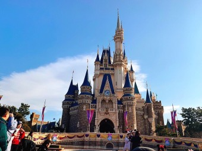
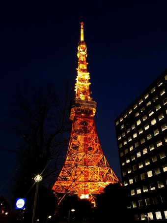

- 

- 
반전 매력이 쉴 새 없이 이어지는 도시
반전 매력이 쉴 새 없이 이어지는 도시
초현대적인 초고층 빌딩과 독보적인 음식, 신나는 밤문화로 유명한 도쿄는 아드레날린이 넘쳐나는 곳입니다. 거대하고 다면적인 도시 도쿄는 최첨단으로 유명하지만, 옛 신사와 빈티지한 찻집, 평화로운 정원이 고요한 휴식과 도쿄의 오랜 역사를 가슴 아프게 상기시켜 줍니다.
어디에서든 진가를 알아보는 사람이라면 소박한 모습으로 숨어 있는 도쿄의 작은 즐거움(숨겨진 라면집, 작은 쇼핑 골목, 멋진 레코드바)을 금세 발견할 수 있습니다.